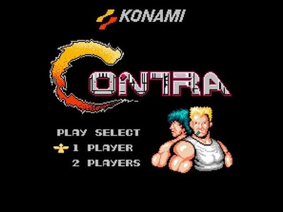

Programowanie czyli jak to ugryżć?!
Witaj wędrowcze! Na tej bardzo podstawowej stronie zamierzam przybliżyć Ci tajniki wejścia w temat programowania.
Tak naprawdę jest to moja pierwsza samodzielna i bardzo podstawowa stronka internetowa służąca utrwaleniu wiedzy zdobytej poprzez lekcje zamieszczone na kanale Samuraj Programowania.
Życzę Tobie oraz sobie wystematyczności i wytrwałości w dążeniu do celu jakim jest nauka języków programowania!